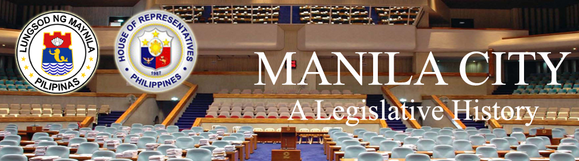

| History |
| Legislators |
| Laws |
| About |
 |
MANILA CITY
The following text/information are lifted from the book of Lee W. Vance entitled Tracing your Philippine Ancestors which was published in Provo, Utah by Stevenson’s Genealogical Center in 1980 and Symbols of the State by the Department of Interior and Local Government of the Republic of the Philippines in 1998.
The City of Manila occupies a unique position in Philippine political geography, for it’s both a chartered city, and also it fulfills the functions of a province for the four cities and thirteen municipalities composing its metropolitan area. But then, Manila has always been an exceptional case, defying just about every political formula devised to govern other towns, cities and provinces. It has required special laws and governmental systems to rule it, practically from the beginning of the Spanish rule of the Philippines in the 16th Century up to the present.
Manila City proper is bounded on the north by Navotas and Caloocan City, on the northeast by Quezon City and San Juan del Monte, on the southeast by Mandaluyong and Makati, and on the south by Pasay City. It faces beautiful Manila Bay to the west.
A relatively new development is the incorporation of all the cities and municipalities comprising the Manila metropolitan area into one unit – a “megacity” – called “Metro Manila”. It is governed as one unit by a governor, who coordinates its functions and services through the various city and municipal officials, very much like a provincial governor rules many towns. And yet, the component cities, provinces and municipalities retain their previous jurisdictions. Metro Manila is comprised of the cities of Manila, Quezon City, Caloocan City and Pasay City, and the municipalities of Navotas, Malabon, Valenzuela (in Bulacan province), Marikina, Pasig, Mandaluyong, San Juan del Monte, Makati, Pateros, Taguig (Tagig), Parañaque, Las Pinas and Muntinglupa.
Manila derived its name from two Tagalog words, “may”, meaning “there is”, and “nilad”, the name of a shrub that originally grew abundantly along the shores of the Pasig River and Manila Bay. Long before the Spanish conquest, Manila was settled by Mohammedans, who carried on a thriving trade with Chinese and other Southeast Asian merchants. “Maynilad” was the principal bay settlement of these Tagalog south of the Pasig River, although it was probably less important commercially than Tondo, the town on the north bank.
Governor-General Legazpi, searching for a suitable place to establish his capital after being compelled to move from Cebu to Panay by Portuguese pirates, and hearing of the existence of a prosperous Mohammedan community in Luzon, sent an expedition under Martin de Goiti to discover its location and potentials. De Goiti anchored at Cavite, and tried to establish his authority peaceably by sending a message of friendship to Maynilad. Rajah Soliman, then its ruler, was willing to befriend the Spaniard, but would not submit to Spanish sovereignty peaceably.
Besides being Spain’s pre-eminent city in the Philippines, and dominant over the other provincial capitals, it was itself a provincial capital over a province whose territory at one time covered nearly all of Luzon, and included the modern territorial subdivisions of Pampanga, Bulacan, Rizal, Laguna, Batangas, Quezon, Mindoro, Masbate and Marinduque. Later, these subdivisions were themselves made provinces, leaving Manila province with a territory roughly equal to the present City of Manila Proper (except Intramuros, the capital site), and the northwestern two-thirds of Rizal province. The boundary of Manila province went from northeast to southwest, including Antipolo, Cainta, Taytay and Taguig, and all of the towns north and west of them, in Manila province; and Angono, Teresa, Morong, and the towns south and east of them, in Laguna province. Early in the province’s history, the provincial name was changed from Manila to “Tondo” province, by which it was known for most of the Spanish era.
Tondo province annexed to this new district the towns of Cainta, Taytay, Antipolo and Bosoboso, while Laguna contributed the towns of Angono, Binangonan, Cardona, Morong, Baras, Tanay, Pililla and Jalajala. But the name of the new district proved unwieldy, too long, and misled many into thinking the town of San Mateo (in Tondo province) was the capital of the San Mateo Mountain District, when in reality the district capital was in Morong.
Manila has a land area of 38.55 square kilometers. In 2007, it had a population of 1,660,714.
Following is a timeline1,2 of events that led to the creation and development of the city of Manila:
DATE |
E V E N T |
|
Manila was first visited by Spaniards. |
|
Martin de Goiti attacked Maynilad and captured it after a stout fight, and having formally taken possession of the city in the name of the King of Spain, he returned to Panay. |
|
Spaniards returned to Manila, this time led by Governor-General Legazpi himself. Seeing them approach, the natives set fire to the town, leveling it to the ground, while the people fled to Tondo and neighboring towns. |
|
The first of these Chinese revolts occurred, when a force of some 3,000 men and 62 Chinese warships under the command of Limahong attacked the city. |
|
After occupying the remains of Maynilad and commencing the construction of a fort there, Legazpi made overtures of friendship to Rajah Lakandula of Tondo, which this time were prudently accepted. |
|
Manila was decreed to be the capital of the Archipelago, although it had already in fact served that function practically from its founding in 1571. |
|
Chinese rose in revolt and set fire to Quiapo and Tondo, and for a time threatened to capture Intramuros. |
|
Chinese rose again in revolt. |
|
A conspiracy led by Tingco plotted to kill all the Spaniards. |
|
During the “Seven Years’ War”, the British occupied Manila, remaining in the city until 1764. |
|
Four pueblos or towns of Tondo province were joined with the northeastern towns of Laguna province to form the politico-military “Distrito de los Montes de San Mate”, or District of the San Mateo Mountains. |
|
Following common practice of the day, the district was renamed after its capital; namely, Morong District. At about the same time, Tondo Province was renamed Manila Province. |
|
The secret revolutionary organization devoted the overthrow of Spanish rule of the country, called the Katipunan, and was organized in Manila’s suburb, Tondo. |
|
Open rebellion broke out, with the Spaniards losing the Philippines to the combined Filipino-American forces. |
|
But Spain ceded the country only to the Americans, who exerted their control militarily, defeating the Filipinos in the “Mock Battle” of Manila. |
|
General Emilio Aguinaldo (then president of the Republic) surrendered in Palanan, Isabela. |
|
By virtue of Philippine Commission Act 137, along with the establishment of the civil government, the Philippine Commission dissolved the former province of Manila, and merged its pueblos with those of the District of Morong, forming the new province of Rizal. |
|
Manila continued under an American Military government until civil government was established for the city on this date. |
|
By virtue of Philippine Commission Act 183, the Philippine Commission provided for a new charter for the city of Manila, defining its boundaries, and thus annexing some of Rizal Province’s towns to the city as districts. |
|
ACT 183 entitled an act to incorporate the city of Manila was approved. |
|
ACT 313 amended ACT 183, entitled "An Act to Incorporate the City of Manila. |
|
By virtue of Philippine Commission Act 341, boundaries were slightly revised and redefined on January 29, 1902, when the suburb of Gaglangin was annexed to the city district of Tondo, and the former pueblo of Santa Ana was annexed as a district to Manila City. |
|
ACT 341 amended ACT 183 by fixing new boundaries for the city of Manila. |
|
The city board officially divided the city into 13 political subdivisions named districts, and the boundaries of each were defined as ratified by Philippine Commission Act 1105, dated April 4 1904. |
|
By virtue of Act 447, the number of city districts were increased to thirteen; and, representation of Santa Ana and Pandacan districts were provided for. |
|
ACT 503 amended ACT 183. |
|
ACT 613 amended Sec. 17 of ACT 183. |
|
ACT NO. 2200 amended Sec. 54 ACT 183, known as "The Manila Charter." |
|
Act 2257 amended Secs. 46, 57, 50, 57, 75 and 76 of Act 183. |
|
ACT NO. 2991 an act to amend the charter of the city of Manila, as found in Chapter 60 of the Administrative Code, and for other purposes. |
|
Government officials declared Manila an open city. |
|
By virtue of Executive Order No. 400, President Quezon decreed the merger of the town of Quezon City, Caloocan, San Juan del Monte, Mandaluyong, Makati, Pasay and Paranaque with Manila City to form the town he called “Greater Manila”, to simplify the administration of the metropolitan area during the war. |
|
Being practically destroyed in the process, the city was liberated from Japanese control by the joint Filipino-American forces. |
|
Quezon City was declared the national capital of the new Republic of the Philippines, thus robbing Manila City of an honor it had held since 1595. |
|
By virtue of Republic Act (RA) 409, the charter of the city of Manila was revised. The city of Manila was then divided into 14 municipal districts including Tondo, San Nicolas, Binondo, Quiapo, Sta. Cruz, Sampaloc, San Miguel, Intramuros, Port Area, Ermita, Malate, Paco, Pandacan and Sta. Ana. |
|
By virtue of Republic Act 1571, certain sections of the Revised Charter of the City of Manila were amended. |
|
By virtue of Republic Act 1804, Sec. 11-A of Act 2706 was repealed. Similarly, by virtue of Republic Acts 1837 and 1934, certain sections of the Revised Charter of the City of Manila were amended. |
|
RA 2622 amended Sec. 39 & 46 of the revised charter of the city of Manila, as amended by RA 1201. |
|
By virtue of Republic Act 3010, certain sections of the Revised Charter of the City of Manila were amended. |
|
RA 3719 amended Sec. 2067/B of the administrative code, and the respective city charters, except the cities of Manila and Trece Martires, as amended by RA 840, fixing the salaries of provincial and city officials. |
|
By virtue of Republic Acts 3865 and 3899, certain sections of revised charter of the City of Manila were amended. |
|
By virtue of Republic Acts 4018, 4050 and 4065, certain sections of revised charter of the City of Manila were amended. |
|
RA 4631 amended Sec. 38 of RA 409, otherwise known as the revised charter of the city of Manila |
|
RA 6039 amended Sec. 18 (CC) of RA 409 as amended, entitled, "an act to revise the charter of the city of Manila, and for other purposes." |
|
RA 6053 amended Sections 18, 53, 59 64, and 65 of RA 409, as amended, otherwise known as the revised charter of the city of Manila, and for other purposes. |
|
President Ferdinand Marcos’ Decree No. 940 returned the national capital to Manila, declaring that “the area prescribed as Metro Manila by P.D. 824” was to be the seat of the national government. |
|
Manila constitutes six legislative districts. Listed below are the barangays of each district: 1st District: Barangays Nos. 1-146, N-City Boundary between Manila and Caloocan; E-From Estero de Sunog Apog going South to Estero de Vitas up to the bridge spanning Juan Luna Street, eastward to Tayuman Street up to the Railroad Tracks along Dagupan Street, thence southward to Claro M. Recto Avenue extending westward to Manila Bay; W-Manila Bay northward to City boundary between Manila and Caloocan. 2nd District: Barangays Nos. 147-267, N City Boundary between Caloocan; E From end of Rizal Avenue Extension extending southward to Railroad Tracks at Antipolo Street; from corner Antipolo Street and Rizal Avenue on southern side of Railroad Tracks extending westward to Estero de San Lazaro, southward along Estero de San Lazaro up to corner of C.M. Recto Avenue in the south; S-Claro M. Recto Avenue in the south; S-Claro M. Recto Avenue westward to bridge spanning Claro M. Recto at Estero dela Reina; W-Estero dela Reina to Estero de Vitas to Estero Sunog Apog to City boundary between Manila and Caloocan. 3rd District: Barangays Nos. 268-394, N-City boundary between Manila and Caloocan; E-A. Bonifacio Street extending southward to Dimasalang, Andalucia, Claro M. Recto Avenue, eastward to Estero de San Miguel ending at Pasig River; S-Mouth of Estero de San Miguel at Pasig River, westward to Del Pan Briedge, thence to Del Pan Bridge; W-Del Pan Street northward up to Claro M. Recto Extension to Estero de San Lazaro, northward to Antipolo Street, eastward to Rizal Avenue Extension, northward to boundary between Manila and Caloocan. 4th District: Barangays Nos. 395-586, SW-Estero de San Miguel up to Mendiola Bridge, thence to C.M. Recto Avenue to Quezon Boulevard; W-Quezon Boulevard, Andalucia, Dimasalang up to boundary between Manila and Quezon City up to Ramon Magsaysay Boulevard; SE- Ramon Magsaysay Boulevard up to V. Mapa Street; S-Ramon Magsaysay Boulevard up to point Estero de San Miguel where Ramon Magsaysay Boulevard spans Estero de San Miguel. 5th District: Barangays Nos. 649-828, N-Mouth of Pasig River inland to point Paz M. Guanzon Street extending to Estero de Pandacan; NE-Estero de Pandacan up to Pedro Gil Street to Tejeron Street up to boundary of Manila and Makati; SE-City boundary between Manila and Makati up to Estero de Tripa de Gallina; S-City Boundary between Pasay and Manila down to Roxas Boulevard up to the edge of reclaimed areas westward to Manila Bay; W-Manila Bay up to the mouth of Pasig River. 6th District: Barangays Nos. 587-648 and 829-905, N-Starting from point which is mouth of Estero de San Miguel going eastward to Mendiola Bridge following line Estero de San Miguel up to the point where Ramon Magsaysay Boulevard eastward to city boundary between Manila and Quezon City; NE City boundary up to point City boundary of Manila, San Juan and Quezon City; E-Manila-San Juan-Mandaluyong-Makati boundaries up to Tejeron Street; SE-Tejeron Street to Pedro Gil Street up to bridge spanning Estero de Pandacan; SW & W-Estero de Pandacan going northward to Paz M. Guanzon Street, then northward on Paz M. Guanzon Street up to Pasig River to mouth of Estero de San Miguel on Pasig River. |
Sources:
1Vance, L. W. (1980). Tracing your Philippine ancestors. Provo, Utah: Stevenson's Genealogical Center.
2Velasco, C. R. and Untivero, R. G. (1998). Symbols of the State. Manila: National Media Production Center.

Congressional Library Bureau
Legislative Library Service